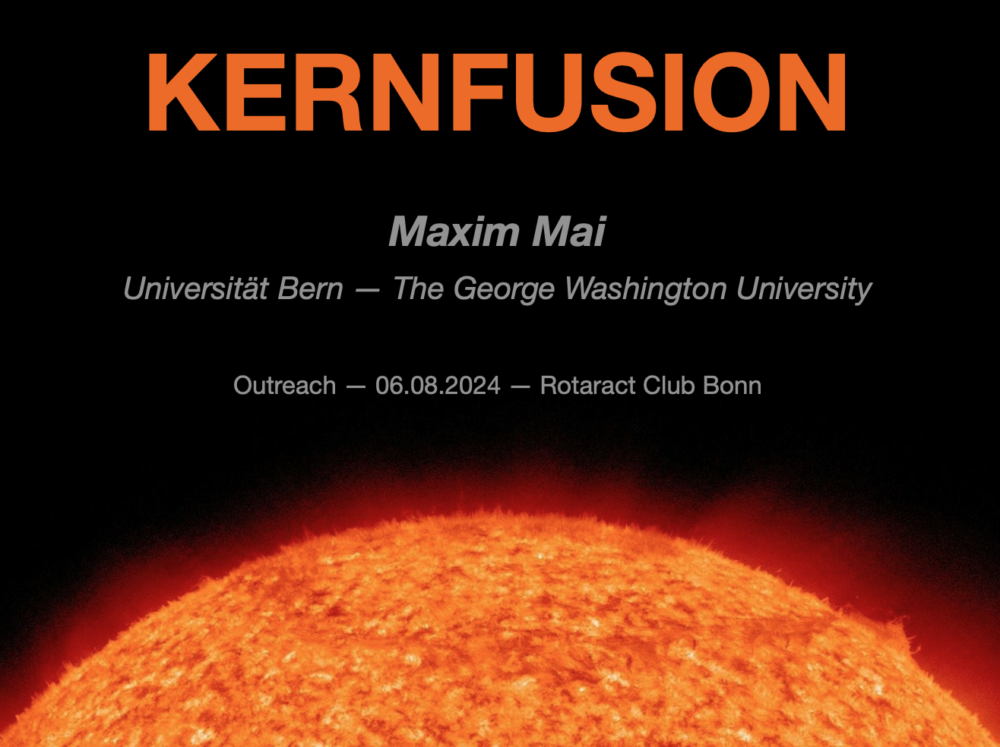
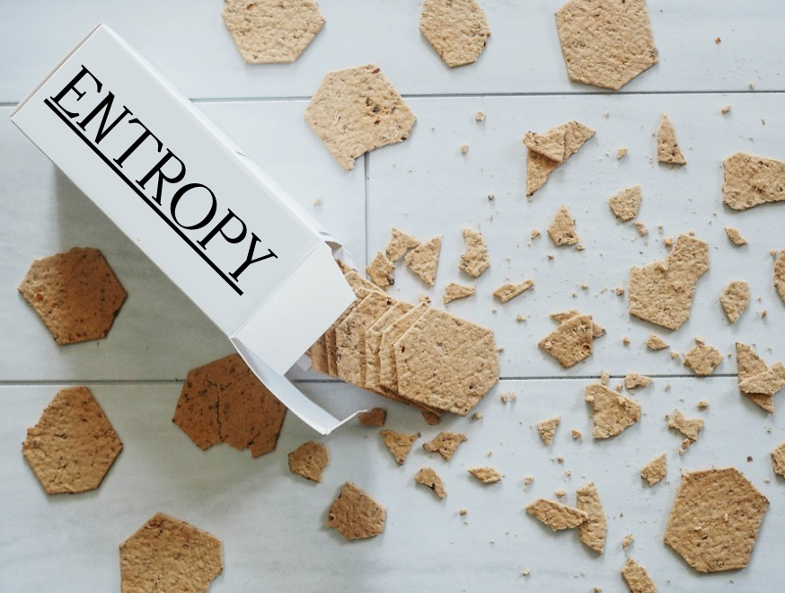
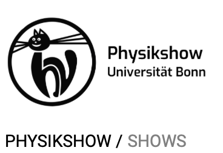

<!DOCTYPE html>
<html>

<!-- MATHJAX INCLUSION -->
<script src="https://polyfill.io/v3/polyfill.min.js?features=es6"></script>
<script id="MathJax-script" async src="https://cdn.jsdelivr.net/npm/mathjax@3/es5/tex-mml-chtml.js">
</script>
<!-- example: \( \pi \) -->
<!-- MATHJAX INCLUSION -->


<!-- Page style -->
<title>Maxim Mai/talks</title>
<meta charset="UTF-8">
<meta name="viewport" content="width=device-width, initial-scale=1">
<link rel="stylesheet" href="main.css" type="text/css"/>
<!-- Page style -->
<style>
  /* Styling for the blockquote */
  blockquote {
      font-family: 'Georgia', serif;
      font-size: 16px;
      font-style: italic;
      color: #555;
      text-align: right;
      margin-right: 0px;
      /* padding: 20px 40px; */
      /* border-left: 8px solid #007BFF;
      background-color: #f9f9f9;
      line-height: 1.6; */
  }

  /* Styling for the author attribution */
  blockquote footer {
      display: block;
      margin-top: 10px;
      font-size: 14px;
      font-style: normal;
      color: #777;
      text-align: right;
  }
</style>


<!--%%%%%%%%%%%%%% NAVIGATION MENU %%%%%%%%%%%%%%-->

<!--%%%%%%% BigScreen %%%%%%%%-->
  <nav class="w3-sidebar w3-collapse w3-animate-left" style="
    z-index:1;
    width:220px;
    margin-left:-8px;
    border-right: 1px solid #c6c6c6;
    margin-top:-10px" id="mySidebar">
    <br>
    <div class="w3-container" style="border: none">
      <!-- <a href="#" onclick="w3_close()" class="w3-hide-large w3-right w3-jumbo w3-padding" title="close menu"> -->
        
      <!-- </a> -->
        <!-- <br> -->
        <p class="text" style="font-size:bigger;margin-bottom:-10px;">
            <b>Maxim Mai</b>
        </p>
        <p class="text" style="color: rgb(130, 130, 130);font-size: smaller;">
            .../outreach
        </p>
    <!-- </div>
    <div class="w3-bar-block"> -->
      <a href="index.html" onclick="w3_close()" class="fixed-width-underline">
        ← main page  &nbsp;&nbsp;&nbsp;&nbsp;
      </a>
    <!-- </div> -->
  </nav>

<!--%%%%%%% Small screen %%%%%%%%-->
<!-- <div class="w3-overlay w3-hide-large w3-animate-opacity"> -->
  <div class="topbar topbar-collapse">
    
    <div class="top-menu-left">
      <a href="index.html">
        <!-- <b> -->
          <span>Maxim Mai</span>
          <span>Bern-Washington-Bonn</span>
          </a>
        <!-- </b> -->
      </a>
    </div>
    <div class="top-menu-right">
        <a href="index.html">← main page</a>&nbsp;&nbsp;&nbsp;&nbsp;&nbsp;&nbsp;&nbsp;&nbsp;
        <a href="outreach.html">.../Outreach</a> 
    </div>
</div>


<!--********************************************************************-->
<!--************************** !PAGE CONTENT! **************************-->
<!--********************************************************************-->
<div class="w3-main">
  <br>
  <br>
  <br>
  <br>
  <div class="w3-container">
  <!-- <div class="containerAI"> -->
    <div class="text" style="width: 100%;">
      <h1>
          Outreach
      </h1>
      <!-- %%%%%%%% -->
      <blockquote>
        If you can't explain it simply, you don't understand it well enough.
        <footer>Albert Einstein</footer>
      </blockquote>
      <!-- %%%%%%%% -->
      <br>
      <br>
      <!--  -->
      <div class="text" style="
        width: 100%;         
        display: flex;
        align-items: center;
        gap: 20px;
        margin: 0;">
      <span>
      Presentation (in German) on basic principles and ideas behind nuclear fusion. Current status of research. 
      Talk held in 2024 for students and other general audience members of the Rotaract Club Bonn. German version: [<a href="talks/RAC-MaximMai.pdf" target="_blank">slides</a>]. 
      English & more technical version: [<a href="talks/Habilitation-MaximMai.pdf" target="_blank">slides</a>].
      </span>
      <br>    
      <a href="talks/RAC-MaximMai.pdf" target="_blank">
        
      </a>   
      </div>
      <!-- %%%%%%%% -->
      <br>
      <br>
      <br>
      <!-- %%%%%%%% -->
      <div class="text" style="
        width: 100%;         
        display: flex;
        align-items: center;
        gap: 20px;
        margin: 0;">
        
        <span>
          Astronomy on the Mall. One day open air outreach event for general audience where various astronomical models are presented at the National Mall (Washington, DC). An empowering experience with many interested people from all age groups. 
          <br>
          Picture with <a href="https://jhare.net" style="display: inline;" target="_blank">Jeremy Hare</a>
        </span>
      </div>
      <!-- %%%%%%%% -->
      <br>
      <br>
      <br>
      <!--  -->
      <div class="text" style="
        width: 100%;         
        display: flex;
        align-items: center;
        gap: 20px;
        margin: 0;">
      <span>
        Art/science fusion event at <a href="https://www.rhizomedc.org" target="_blank">Riozome DC</a>. Talk for general audience on Entropy. General ideas and principles. From thermodynamics to the measure of entropy/disorder.       
        Maxwell demons and free heating? 
        [<a href="talks/Entropy-Riozome.pdf" target="_blank">slides</a>]
      </span>
      <a href="talks/Entropy-Riozome.pdf" target="_blank">
        
      </a>  
      </div>
      <!-- %%%%%%%% -->
      <br>
      <br>
      <br>
      <!-- %%%%%%%% -->
      <div class="text" style="
        width: 100%;         
        display: flex;
        align-items: center;
        gap: 20px;
        margin: 0;">
         
        <a href="https://www.physik-astro.uni-bonn.de/physikshow/de" target="_blank">
        
      </a> 
        <span>
          "Physikshow" (Physics Show) of the University Bonn. Annual two-day event with demonstrations of physics experiments for general public.
        </span>
      </div>
      <!-- %%%%%%%% -->

    </div>
  </div>
</div>


<!-- End page content -->
<script>
// Script to open and close sidebar
function w3_open() {
    document.getElementById("mySidebar").style.display = "block";
    document.getElementById("myOverlay").style.display = "block";
}

function w3_close() {
    document.getElementById("mySidebar").style.display = "none";
    document.getElementById("myOverlay").style.display = "none";
}
</script>

</body>
</html>

